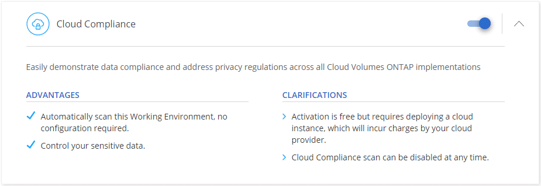
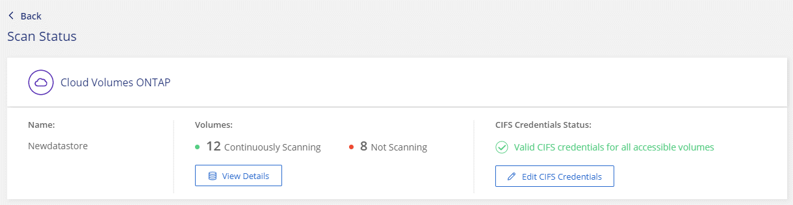

クラウドコンプライアンスの開始
寄稿者
Cloud Volumes ONTAPまたはAzure NetApp Filesのクラウドコンプライアンスを開始するには、いくつかの手順を完了してください。
クイックスタート
これらの手順に従うことですぐに開始するか、残りのセクションまでスクロールダウンして詳細を確認してください。
 前提条件を確認する
前提条件を確認する
クラウド環境が前提条件を満たしていることを確認します。これには、クラウドコンプライアンスインスタンスの16個のvCPU、インスタンスのアウトバウンドインターネットアクセス、ポート80を介したCloud Managerとクラウドコンプライアンス間の接続などが含まれます。 完全なリストを参照してください 。
 クラウドコンプライアンスを有効にする
クラウドコンプライアンスを有効にする
新しい作業環境：作業環境を作成するときは、クラウドコンプライアンスを有効にしてください（デフォルトで有効になっています）。
既存の作業環境：[ コンプライアンス ]をクリックし、オプションで作業環境のリストを編集して、[ コンプライアンスダッシュボードの表示 ]をクリックします 。
 ボリュームへのアクセスを確保する
ボリュームへのアクセスを確保する
クラウドコンプライアンスが有効になったので、ボリュームにアクセスできることを確認します。
Cloud Complianceインスタンスには、各Cloud Volumes ONTAPサブネットまたはAzure NetApp Filesサブネットへのネットワーク接続が必要です。
Cloud Volumes ONTAPのセキュリティグループは、Cloud Complianceインスタンスからのインバウンド接続を許可する必要があります。
NFSボリュームエクスポートポリシーは、クラウドコンプライアンスインスタンスからのアクセスを許可する必要があります。
クラウドコンプライアンスでは、CIFSボリュームをスキャンするためにActive Directoryの資格情報が必要です。
[ コンプライアンス] > [ スキャンステータス] > [ CIFS資格情報の編集]をクリックし、資格情報を提供します。資格情報は読み取り専用にすることができますが、管理者の資格情報を提供することで、クラウドコンプライアンスが昇格された権限を必要とするデータを確実に読み取ることができます。
前提条件の確認
クラウドコンプライアンスを有効にする前に、次の前提条件を確認して、サポートされている構成があることを確認してください。クラウドコンプライアンスを有効にした後、ボリュームへの接続を確認する必要があります。以下で説明します。
- 送信インターネットアクセスを有効にする
クラウドコンプライアンスには、アウトバウンドインターネットアクセスが必要です。仮想ネットワークがインターネットアクセスにプロキシサーバーを使用する場合、クラウドコンプライアンスインスタンスが次のエンドポイントに接続するためのアウトバウンドインターネットアクセスを持っていることを確認してください。 Cloud ManagerはCloud ComplianceインスタンスをCloud Managerと同じサブネットにデプロイすることに注意してください。
エンドポイント 目的 https://cloudmanager.cloud.netapp.com
Cloud Centralアカウントを含むCloud Managerサービスとの通信。
https://netapp-cloud-account.auth0.com
一元化されたユーザー認証のためのNetApp Cloud Centralとの通信。
https://cloud-compliance-support-netapp.s3.us-west-1.amazonaws.com
https://hub.docker.com
https://auth.docker.io
https://registry-1.docker.io
https://index.docker.io/
https://dseasb33srnrn.cloudfront.net/
https://production.cloudflare.docker.com/ソフトウェアイメージ、マニフェスト、およびテンプレートへのアクセスを提供します。
https://kinesis.us-east-1.amazonaws.com
NetAppが監査レコードからデータをストリーミングできるようにします。
https://cognito-idp.us-east-1.amazonaws.com
https://cognito-identity.us-east-1.amazonaws.comCloud Complianceがマニフェストとテンプレートにアクセスしてダウンロードし、ログとメトリックを送信できるようにします。
- Cloud Managerに必要な権限があることを確認してください
Cloud Managerにリソースをデプロイし、Cloud Complianceインスタンスのセキュリティグループを作成する権限があることを確認します。 NetAppが提供するポリシーで最新のCloud Manager権限を見つけることができます。
- vCPUの制限を確認してください
クラウドプロバイダーのvCPU制限により、16コアのインスタンスの展開が許可されていることを確認してください。 Cloud Managerが実行されている地域の関連するインスタンスファミリのvCPU制限を確認する必要があります。
AWSでは、インスタンスファミリはOn-Demand Standardインスタンスです。 Azureでは、インスタンスファミリはStandard DSv3 Familyです。
vCPU制限の詳細については、次を参照してください。
- Cloud Managerがクラウドコンプライアンスにアクセスできることを確認してください
Cloud ManagerとCloud Complianceインスタンス間の接続を確認します。
Cloud Managerのセキュリティグループは、ポート80を介したCloud Complianceインスタンスとの送受信トラフィックを許可する必要があります。
この接続により、クラウドコンプライアンスインスタンスの展開が可能になり、コンプライアンスタブで情報を表示できるようになります。
AWSネットワークがインターネットアクセスにNATまたはプロキシを使用しない場合、Cloud Managerのセキュリティグループを変更して、クラウドコンプライアンスインスタンスからのTCPポート3128経由のインバウンドトラフィックを許可します。
これは、クラウドコンプライアンスインスタンスがインターネットにアクセスするためのプロキシとしてCloud Managerを使用するために必要です。
このポートは、バージョン3.7.5以降のすべての新しいCloud Managerインスタンスでデフォルトで開いています。それより前に作成されたCloud Managerインスタンスでは開きません。
- Azure NetApp Filesのディスカバリーをセットアップする
Azure NetApp Filesのボリュームをスキャンする前に、 Cloud Managerを設定して構成を検出する必要があります 。
- クラウドコンプライアンスを継続して実行できることを確認する
Cloud Complianceインスタンスは、データを継続的にスキャンするために継続する必要があります。
- Webブラウザーのクラウドコンプライアンスへの接続を確認する
クラウドコンプライアンスが有効になったら、ユーザーがクラウドコンプライアンスインスタンスに接続しているホストからCloud Managerインターフェースにアクセスするようにします。
クラウドコンプライアンスインスタンスは、プライベートIPアドレスを使用して、インデックス付きデータがインターネットにアクセスできないようにします。その結果、Cloud Managerへのアクセスに使用するWebブラウザーには、そのプライベートIPアドレスへの接続が必要です。この接続は、AWSまたはAzureへの直接接続（VPNなど）、またはクラウドコンプライアンスインスタンスと同じネットワーク内にあるホストからのものです。
パブリックIPアドレスからCloud Managerにアクセスしている場合、Webブラウザーはおそらくネットワーク内のホストで実行されていません。
新しい作業環境でクラウドコンプライアンスを有効にする
Cloud Volumes ONTAPの作業環境ウィザードでは、クラウドコンプライアンスがデフォルトで有効になっています。オプションを有効のままにしてください。
[ Create Cloud Volumes ONTAP]をクリックします 。
クラウドプロバイダーとしてAmazon Web ServicesまたはMicrosoft Azureを選択し、単一ノードまたはHAシステムを選択します。
[詳細と資格情報]ページに入力します。
[サービス]ページで、クラウドコンプライアンスを有効のままにして[ 続行 ]をクリックします。

ウィザードのページに入力して、システムを展開します。
ヘルプについては、「 AWSでCloud Volumes ONTAPを起動する」および「 AzureでCloud Volumes ONTAPを起動する」を参照してください。
Cloud Volumes ONTAPシステムでクラウドコンプライアンスが有効になっています。初めてクラウドコンプライアンスを有効にした場合、Cloud Managerはクラウドプロバイダーにクラウドコンプライアンスインスタンスをデプロイします。インスタンスが使用可能になるとすぐに、作成した各ボリュームに書き込まれたデータのスキャンが開始されます。
既存の作業環境でクラウドコンプライアンスを有効にする
クラウドコンプライアンスをまだ有効にしていない場合は、Cloud Managerの[ コンプライアンス ]タブから既存のCloud Volumes ONTAPまたはAzure NetApp Files作業環境で有効にします。
別のオプションは、各作業環境を個別に選択して、[ 作業環境 ]タブからクラウドコンプライアンスを有効にすることです。
Cloud Managerの上部で、 コンプライアンスをクリックします。
特定の作業環境でクラウドコンプライアンスを有効にする場合は、編集アイコンをクリックします。
それ以外の場合、Cloud Managerは、アクセスできるすべての作業環境でクラウドコンプライアンスを有効にするように設定されます。

[ コンプライアンスダッシュボードを表示]をクリックします 。
Cloud Managerの上部で、[ 作業環境 ]をクリックします。
作業環境を選択します。
右側のウィンドウで、[ コンプライアンスを有効にする]をクリックします。
初めてクラウドコンプライアンスを有効にした場合、Cloud Managerはクラウドプロバイダーにクラウドコンプライアンスインスタンスをデプロイします。
クラウドコンプライアンスは、各作業環境でデータのスキャンを開始します。 Cloud Complianceが初期スキャンを完了するとすぐに、Complianceダッシュボードでデータが利用可能になります。所要時間はデータ量によって異なります。数分または数時間かかる場合があります。
クラウドコンプライアンスがボリュームにアクセスできることを確認する
ネットワーク、セキュリティグループ、エクスポートポリシーを確認して、クラウドコンプライアンスがボリュームにアクセスできることを確認してください。 CIFSボリュームにアクセスできるように、クラウドコンプライアンスにCIFS資格情報を提供する必要があります。
Cloud ComplianceインスタンスとCloud Volumes ONTAPまたはAzure NetApp Filesのボリュームを含む各ネットワークとの間にネットワーク接続があることを確認してください。
Azure NetApp Filesの場合、Cloud Complianceは、Cloud Managerと同じリージョンにあるボリュームのみをスキャンできます。 Cloud Volumes ONTAPのセキュリティグループがCloud Complianceインスタンスからのインバウンドトラフィックを許可していることを確認してください。
Cloud ComplianceインスタンスのIPアドレスからのトラフィックのセキュリティグループを開くか、仮想ネットワーク内からのすべてのトラフィックのセキュリティグループを開くことができます。
NFSボリュームエクスポートポリシーにCloud ComplianceインスタンスのIPアドレスが含まれていることを確認して、各ボリュームのデータにアクセスできるようにします。
CIFSを使用する場合は、CIFSボリュームをスキャンできるように、クラウドコンプライアンスにActive Directory資格情報を提供します。
Cloud Managerの上部で、 コンプライアンスをクリックします。
右上の[ スキャンステータス ]をクリックします。
![コンテンツペインの右上にある[スキャンステータス]ボタンを表示する[コンプライアンス]タブのスクリーンショット。](./media/screenshot_cifs_credentials.gif)
作業環境ごとに、[ CIFS資格情報の編集 ]をクリックし、Cloud Complianceがシステム上のCIFSボリュームにアクセスするために必要なユーザー名とパスワードを入力します。
資格情報は読み取り専用にすることができますが、管理者資格情報を提供することで、クラウドコンプライアンスが昇格された権限を必要とするすべてのデータを読み取ることができます。資格情報はCloud Complianceインスタンスに保存されます。
資格情報を入力すると、すべてのCIFSボリュームが正常に認証されたというメッセージが表示されます。

[ スキャンステータス ]ページで[ 詳細の表示]をクリックして、各CIFSおよびNFSボリュームのスキャンステータスを確認し、エラーを修正します。
たとえば、次の画像は、クラウドコンプライアンスインスタンスとボリューム間のネットワーク接続の問題のためにクラウドコンプライアンスがスキャンできない3つのボリュームを示しています。
 GitHubで編集
GitHubで編集